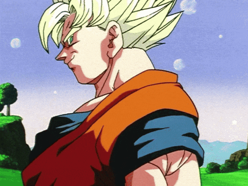

Hollow Knight Silksong

El juego mas esperado del 2025:Solo se puede definir con una palabra: "grandeza"
Hollow Knight Silksong será un punto de referencia para los juegos de Metroidvania, al igual que su predecesor.Su mayor dificultad, combinada con exploración y finales progresivos, promete muchas horas de juego presentadas con alta estética y música. Porque al menos la música es medicina para el alma, especialmente cuando la canción está hecha de seda.

XxManuelito77xX
Me encantó el juego, 20/10 y GOD, Manuelito se va contento a la cama